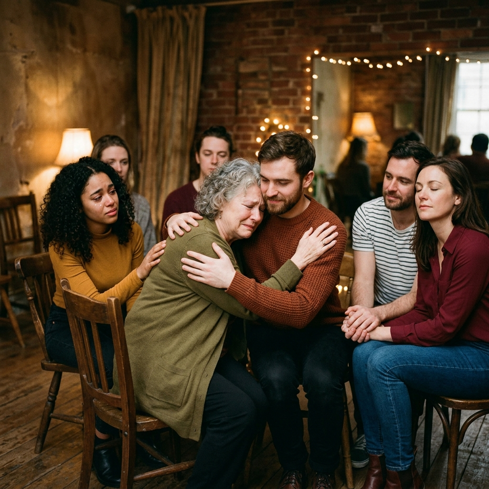

El teatro como canal de expresión del alma.
Un viaje de autoexploración, integración corporal y transmutación emocional en Teatro Estudio. Más de 20 años encendiendo la chispa creadora y la cercanía humana a través del juego escénico.

El juego escénico como puente hacia tu ser esencial
El teatro holístico es una experiencia que utiliza herramientas teatrales, corporales y expresivas para el autoconocimiento y el crecimiento personal. Integra cuerpo, mente, emoción y energía, ayudando a liberar tensiones, superar bloqueos y potenciar la autenticidad sin el objetivo principal de formar actores.
Autodescubrimiento
Permite reconocer y soltar "máscaras" o personajes cotidianos que ya no representan a la persona, conectando con su verdadero sentir.
Enfoque Integral
Trabaja la voz, el movimiento espontáneo, la respiración y la presencia plena en el aquí y ahora para integrar mente y cuerpo.
Liberación
Ayuda a superar el miedo escénico, la vergüenza y los bloqueos emocionales mediante el juego libre en un contenedor seguro.

El escenario como espejo del alma
A diferencia del teatro convencional orientado al aplauso y a la técnica, nuestro enfoque holístico utiliza el arte como un canalizador. El escenario se transforma en un espacio sagrado donde podés ensayar nuevas formas de ser, sentir y vibrar, para luego llevar esa autenticidad a tu vida cotidiana.
"El teatro es el arte de recordar quiénes somos detrás de las máscaras."
Sobre Mer Canda
Reconocida actriz, directora de teatro y docente radicada en la ciudad de Mar del Plata, Argentina. Es especialmente conocida en el ámbito teatral independiente por sus producciones locales y por dictar talleres de actuación innovadores.
Con más de 20 años de trayectoria, dicta Talleres de Teatro con enfoque Holístico, un espacio de formación que combina las herramientas de la actuación tradicional con el autoconocimiento, la exploración corporal y el desarrollo expresivo integral.
Como parte de su actividad profesional en dirección teatral, ha liderado y dirigido a elencos independientes locales en importantes salas de la ciudad, coordinando muestras anuales y puestas en escena de obras de gran relevancia teatral.
Sus talleres regulares presenciales se dictan principalmente en el espacio Teatro Estudio (Av. Independencia 2233, Mar del Plata). Toda su labor docente y artística está centrada enteramente en la cercanía humana y el respeto sagrado por el proceso de expresión auténtica de cada persona.

Teatro Estudio
Av. Independencia 2233, Mar del Plata
Clases y Talleres en Mar del Plata
Las clases con enfoque holístico dictadas por Mer Canda se desarrollan en la sala Teatro Estudio. No necesitás ninguna experiencia teatral previa.
Teatro Sagrado & Alquimia Emocional
Un viaje profundo de integración. Fusionamos la improvisación teatral con la Gestalt y la mirada transpersonal para disolver las corazas físicas e integrar tus luces y sombras.
- Lugar: Teatro Estudio (Av. Independencia 2233)
- Enfoque: Catarsis corporal, arquetipos y juego sanador.
- Grupo: Círculo íntimo de hasta 12 almas.
Iniciación al Juego y la Expresión Libre
Destinado a quienes buscan soltarse, superar la timidez y reencontrarse con la alegría de jugar en grupo. Un oasis lúdico para reír, respirar y conectar desde la espontaneidad.
- Lugar: Teatro Estudio (Av. Independencia 2233)
- Enfoque: Risoterapia, juegos vocales y dinámicas de grupo.
- Grupo: Ambiente de absoluta seguridad y confianza.
Cuerpo, Voz y Canalización Orgánica
Encuentros intensivos los fines de semana enfocados en el desbloqueo de la energía vital. Meditaciones activas, desbloqueo somático y liberación de la voz natural.
- Lugar: Teatro Estudio (Av. Independencia 2233)
- Enfoque: Práctica corporal intensa e integración grupal.
- Grupo: Incluye almuerzo vegetariano en círculo compartido.
El latir de nuestro círculo
Palabras de quienes han compartido el escenario sagrado y han abierto su corazón junto a Mer Canda.
Sentir el llamado de la ronda
Si resuena en vos la propuesta y querés sumarte a nuestros círculos de expresión o hacerme alguna consulta personal, escribime directamente al WhatsApp de Mer. Te responderé personalmente con total cercanía.
Enviar WhatsApp a Mer (223 663-3197)